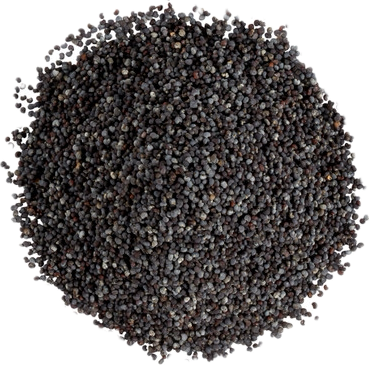

Papaver somniferum
Overview
Poppy seeds are the tiny, kidney-shaped seeds of the opium poppy plant, native to the Mediterranean region and Asia. They have a mild, nutty flavor and are commonly used as a culinary ingredient and condiment. Poppy seeds are rich in nutrients and are often used in baking and cooking.
Cultural Overlap
Poppy seeds are used in cuisines around the world, particularly in European, Middle Eastern, and Indian cuisines. They are used to flavor bread, pastries, cakes, cookies, and savory dishes such as curries and noodles. Poppy seeds also have cultural significance in traditional medicine and folklore, where they are believed to have various health benefits and symbolic meanings.